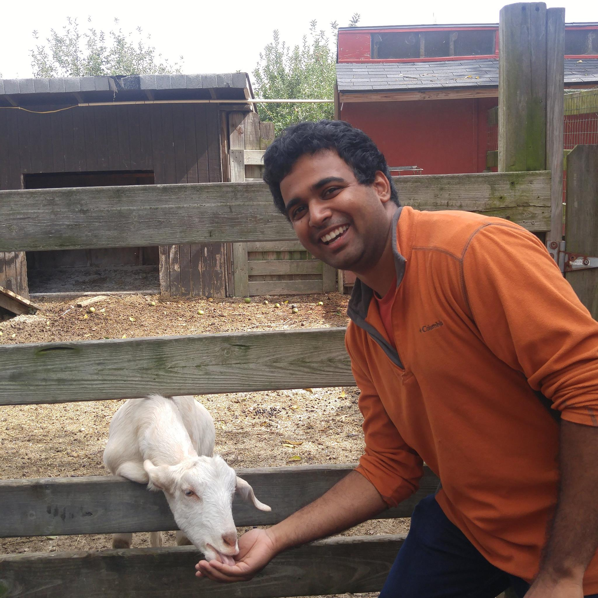

About me.
I'm a grad student at UCSD in Electrical and Computer Engineering. I graduated from UIUC in 2017 with a BS in Electrical Engineering, where I was advised by Professor Paul Kwiat. I'm interested in photonics, security and privacy, cryptography and AI and Machine Learning.
I like to ramble on about a lot of things, and a collection of them can be found on my blog .
Research
I've been very fortunate to work in some very interesting research groups both as an undergraduate and as a graduate student. Below are some research works I've contributed to.
The Eurekometric Connectome: Discovering unexplored areas of neuroscience research
M. Jere , R.K. Raman, L.R.Varshney
Accepted to the International School and Conference on Network Science, June, 2017
High CAR and low g2(0) of 1.55 μm entangled photon-pairs generated by a silicon microring resonator
C.Ma, M. Jere , X. Wang, S. Mookherjea
Accepted to the Conference on Lasers and Electro-optics, May, 2018
Experience
I haeve been very fortunate to work at some incredible companies and roles throughout my career.
FitTrex
Founder and CEO, Summer of 2018
FitTrex is an augmented reality healthcare analytics startup that helps people track their calorie intake more efficiently. Powered by Object Detection and Recognition, it allows users to take a picture of their food and estimate its calories. More information can be found on our website .
Google X, The Moonshot Factory
Hardware Engineering Intern, Summer of 2018
I worked with the Free-Space Optics Communications team to implement a novel adaptive-rate modulation scheme.
The Climate Corporation
Software Engineering Intern, Summer of 2017
I investigated and developed solutions for autonomous robots in agriculture.
Motorola Solutions
Software Engineering Intern, Summer of 2016
I worked with Software Defined Radios.
Center for Academic Resources in Engineering
Academic Tutor, 2015 - 2017